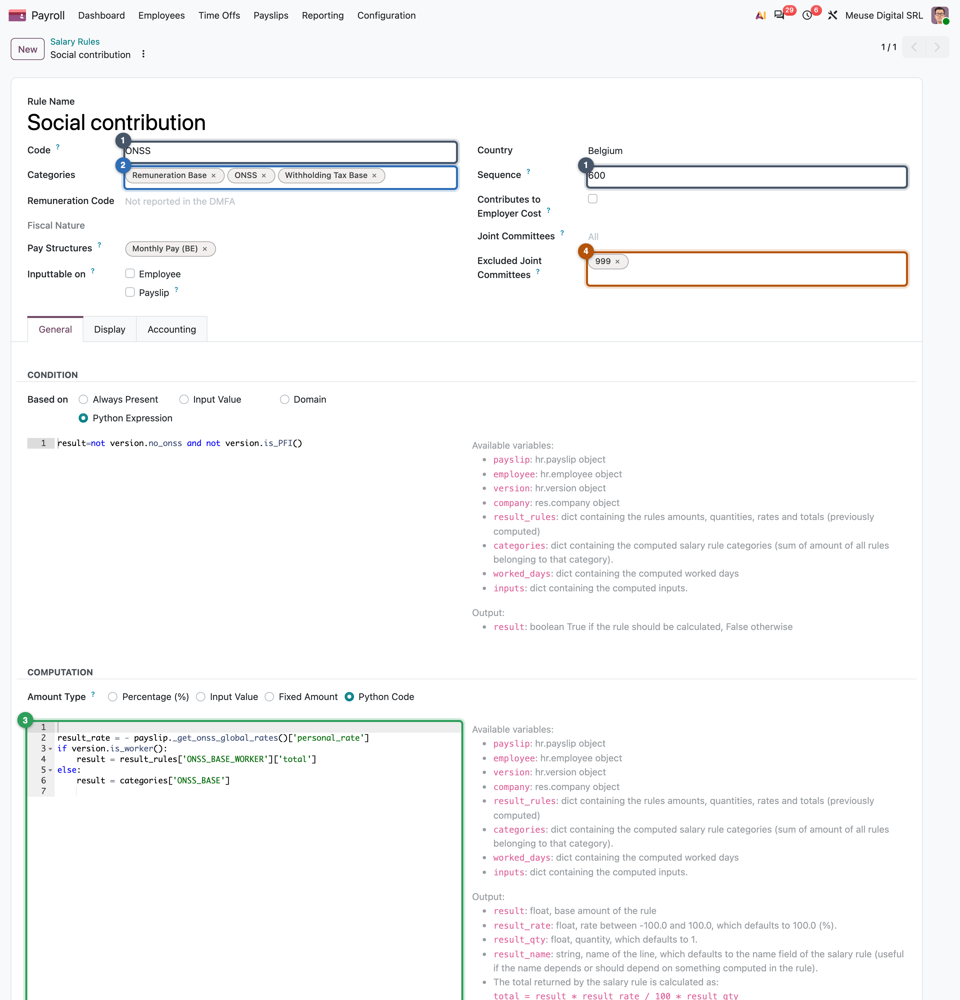

Structures and rules
A structure is a list of rules for one kind of payslip; a rule is one line, with a condition, an amount and a place in the order
- Explain what a structure is, why a country has several, and how a payslip finds its own
- Read any salary rule: its code, condition, amount, categories and position
- Say what a rule can read, what it cannot, and what it is allowed to do
- Explain why the order of the rules carries meaning
- Recognise the three shapes of rule and review each one
Jurgen and Mélanie are paid on the same structure, Monthly Pay. Yet Jurgen's February payslip has a low-wage bonus line that Mélanie's lacks, and Marie's has a company-car line that neither of them has. Nobody added or removed those lines by hand: the structure holds every rule, and each rule decides for itself, payslip by payslip, whether it applies.
What a structure is
A salary structure (also pay structure) is a named list of salary rules for one kind of payslip. When a payslip is computed, the engine runs the rules of its structure, and only those.
Three things follow:
- One structure per kind of payslip. A regular month, a 13th month, holiday pay and a leaver's indemnity are taxed and declared differently, so each is a separate payslip on its own structure.
- A rule can belong to several structures. The social-security rule of a country is usually shared by its regular and bonus structures; it is one record, maintained once.
- Structures are grouped by structure type. The type (the kind of pay on the employee's version) lists its structures and names the default one, for the regular payslip.
A regular pay run takes each employee's default structure from the version. For a payment outside the regular month, you create a run (or a single off-cycle payslip) and choose its structure (Chapter 15).
| Country | Structures | Why so many, or so few |
|---|---|---|
| Belgium | ten: Monthly Pay, Double Holidays, 13th Month, Termination Fees, two exit holiday-pay structures, Advance Pay, and three bonus plans | each has its own withholding method or declaration code |
| Mexico | two: Regular Pay, Christmas Bonus | the bonus has an exempt part and its own tax |
| Most other countries | one regular structure | bonuses are lines on the regular payslip |
Common pitfall: a rule missing from one structure
A rule runs only on the structures it is attached to. A new allowance added to Monthly Pay but not to Termination Fees is simply absent from leavers' final pay, with no error. When you add or review a rule, check its structures list.
Anatomy of a salary rule
A salary rule computes at most one line of the payslip. Every rule, in every country, answers the same five questions. Here is the Belgian employee social-security rule, as you can open it under Configuration > Salary > Rules:
result_rules['ONSS']), and the code on the payslip line.result = not version.no_onss and not version.is_PFI()Always present, except for the few employees exempt from social security. Other choices: always, an input is present, a domain.ONSS_BASE); rate = −13.07 %, read from dated ratesOther choices: a fixed amount, a percentage of a total, the amount of an input.GROSS, 1000) and the tax.
Two details of the card matter in review. The rate is not written in the rule: it comes from dated parameters (Chapter 21), so a new rate next year needs no rule change. And the rule feeds three totals at once, which is how one contribution lowers both the net and the taxable base (Chapter 20).
What a rule can read
A rule's formula runs with a dictionary of names, the same in every country. The list is short and stable:
| What | Name in the rule | Example |
|---|---|---|
| The employee, the version, the company | employee, version, company |
version.wage |
| The payslip and its period | payslip |
payslip.date_to |
| Time worked this period | worked_days |
worked_days['WORK100'].number_of_days |
| Amounts typed for this period | inputs |
inputs['COMMISSIONS'].amount |
| Totals so far | categories |
categories['GROSS'] |
| Results of earlier rules | result_rules |
result_rules['SBC']['total'] |
| Legal values on the payslip's date | payslip._rule_parameter(code) |
payslip._rule_parameter('l10n_mx_uma') |
The form of every rule lists these names next to the code editor (the right side of the screenshot above). A country module can add a few of its own; the Belgian one adds the employee's earlier payslips of the year.
What a rule cannot read is a rule that comes later. At its turn, a later rule has not run yet, and its total, or a category only it feeds, reads as 0, without any error. The same silence hides a misspelt category code. By contrast, worked_days and inputs only contain the codes present on this payslip: reading inputs['BONUS'] when no bonus was typed stops the computation with an error. That is why input rules start by checking (result = 'BONUS' in inputs), or use the Input Value condition, which does it for them.
What a rule can do
A rule produces one line or none. Nothing else.
A rule does not change records. It does not write on the employee, create a leave or update a balance; those are actions of the payslip's validation or of other modules. Rule code runs in a restricted interpreter (no imports), but it can still reach the database through the records it reads, which is why only payroll managers may edit rules, and why a rule that writes anything is a review finding.
Worked example: Marie's meal vouchers
Marie received 20 meal vouchers in February. The rule Retain on Meal Voucher returns amount 1.09 € (the employee's share of one voucher: face value minus the employer's part, both on her version), quantity 20 (one voucher per day worked) and rate −100 %. Total: 1.09 × 20 × −100 % = −21.80 €. The payslip line reads "20 × 1.09", which the employee can check without asking anyone.
Order is meaning
Rules run in the order of their sequence number. There is no other dependency mechanism: a rule sees exactly what ran before it. So the order of a structure is not cosmetic; it is the law's order of operations.
16001000140033404000+The Belgian monthly structure, read as a timeline. Each rule can use what the rules on its left produced:
- Contributions before tax. In Belgium, as in many countries, the taxable base is the salary after the employee's social security, so the contribution must run first.
- Net last among the employee's lines, because it sums them all.
- Employer contributions after the net. They are a cost for the company, not a deduction from the employee; running them after the net makes it obvious they cannot change it. (Some countries run them earlier, and keep them out of the net by category instead: Chapter 20.)
The numbers themselves mean nothing: Mexico uses 1 to 210, Belgium 1 to over 6,000. Do not memorise them; read them relative to their neighbours, and leave gaps when you create rules so the next law fits in between.
Common pitfall: reading a total that is filled later
A rule at sequence 500 that reads categories['GROSS'], filled at 1000, gets 0 and computes a wrong line silently. When a line is unexpectedly zero, compare the sequence of the rule with the sequences of the rules that feed what it reads.
Three shapes of rule
Open any country's rules and you find three shapes.
No code. A customer who pays a company pension contribution of 3 % of the basic salary needs no developer: Amount Type "Percentage (%)", based on categories['BASIC'], 3 %, condition "Always Present", category "Deduction", attached to the regular structure. (An illustrative rule; country modules rarely use this shape, because their rates belong in dated parameters.)
Input rule. Mexico's COMMISSIONS has condition and amount both set to Input Value: the line exists only when someone types a commission on the payslip, and its amount is what was typed. It belongs to the category Taxable Allowance, so commissions are taxed, and it is shown only when not zero. There is no separate "input type" record: the rule is the input type, and its code is the key in inputs.
Formula reading a parameter. Mexico's additional sickness-and-maternity quota (employee part) is due on the part of the daily contribution base above three times the UMA, the official reference unit:
base_contribution_salary = result_rules['SBC']['total']
daily_uma = payslip._rule_parameter('l10n_mx_uma')['daily']
result = max(0, (base_contribution_salary - 3 * daily_uma))
result_qty = days_without_disabilities
result_rate = -0.4
It reads an earlier result (SBC, sequence 124, before this rule at 136), a dated parameter (the UMA) and sets amount, quantity and rate separately, so the line explains itself: daily excess × days × −0.4 %. A reviewer would still note one thing: the 0.4 % rate is written in the code while the UMA is a parameter. If the law changes the rate, this rule changes, and so would every old payslip recomputed with it.
Around the world: switching rules on and off
Conditions are how one structure serves very different employees:
- United States: one income-tax rule per state, each with
result = version.address_id.state_id.code == 'CA'(or its own state). - India: income tax is withheld only in the months the rule's condition selects.
- Mexico: commissions and bonuses appear only when an input is typed.
- Belgium: a filter in front of every condition skips the rules of other sectors (joint committees), so one structure serves them all.
Review checklist
For each rule you create or review:
- No legal number in the code. Rates, caps and brackets come from a parameter (Chapter 21); a literal
0.4or25 *is a finding. - Everything it reads is computed earlier. Each category and result it reads is fed by rules with a lower sequence.
- It feeds the right totals. A rule with no category, or a missing one, never reaches the gross, the taxable base or the net (Chapter 20).
- It checks inputs and time codes exist before reading them, or uses the Input Value condition.
- It rounds where the law rounds, and only there. The engine does not round inside a computation; Belgium's withholding rule, for instance, rounds the monthly tax down to the cent itself.
- It is on every structure where it applies, and changes no record.
Summary
- A structure is a named list of rules for one kind of payslip; a country has one per payslip that is taxed or declared differently.
- A payslip gets its structure from the version's structure type (the default), or from the pay run or off-cycle payslip that names one.
- A rule answers five questions: identity (name, code), when (condition), how much (amount × quantity × rate), where it goes (categories, accounts, visibility) and order (sequence).
- A rule reads the employee and version, the payslip, worked days, inputs, totals so far, earlier results and parameters; never a later rule, which reads as 0.
- A rule produces one line or none, and changes no record.
- Order is meaning: contributions before tax, net last, employer contributions after the net.
- Three shapes: no code, input rule, formula reading a parameter.